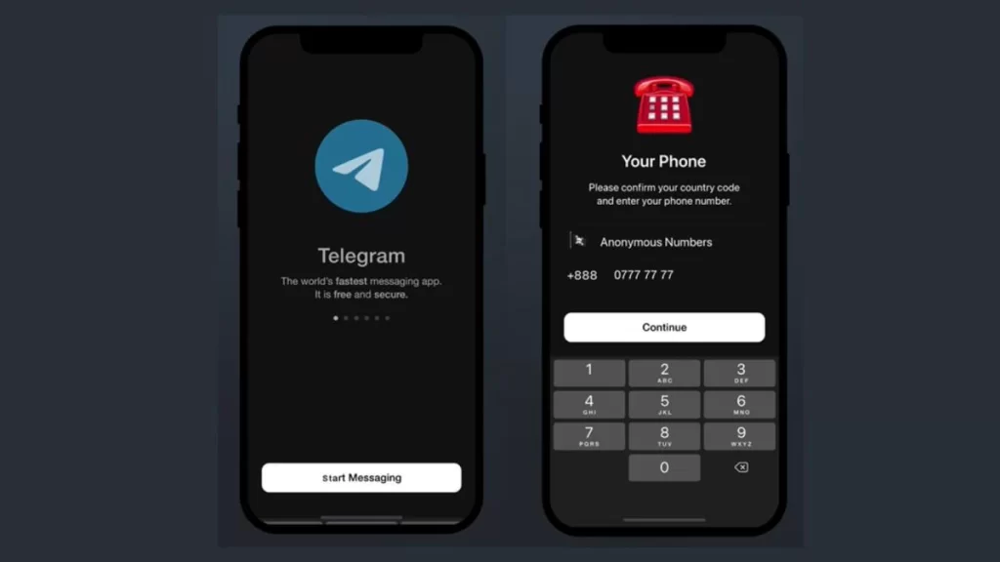

Telegram怎么注销？
要注销Telegram账号，你可以进入设置，选择“隐私和安全”选项，找到并点击“删除我的账号”。接着，根据提示输入你的手机号码，并确认删除。此操作将永久删除你的账号及所有数据，请谨慎操作。
Telegram账号注销流程
如何永久删除Telegram账号
- 访问Telegram设置：首先，在Telegram应用或桌面客户端中打开设置菜单。在设置中，找到“隐私和安全”部分，这是管理账户安全相关选项的地方。
- 选择删除账号：在“隐私和安全”设置中，会有一个“删除我的账号”的选项。点击这个选项，系统会提示你确认是否真的想要删除账号。
- 确认删除操作：在确认删除账号的过程中，你可能需要输入你的手机号码来接收验证代码，或直接确认删除。一旦确认，你的账号以及所有相关数据将被永久删除。
注销Telegram账号的步骤
- 备份你的数据：在注销账号之前，如果你希望保存你的聊天记录或共享的文件，可以使用Telegram备份功能将数据导出到你的设备。
- 使用自动注销功能：Telegram提供了一项自动注销功能，可以在你的账号在一定时间内未活动后自动删除。你可以在设置中调整这个时间设置，从1个月到1年不等。
- 手动注销账号：如果你想立即注销账号，可以遵循删除账号的步骤，确保在注销过程中遵循所有提示，完成所有验证步骤，以确保账号的安全永久删除。
Telegram注销前的注意事项
注销Telegram账号的后果
- 永久删除所有数据：注销Telegram账号会导致所有个人信息、聊天记录、群组和联系人信息被永久删除，无法恢复。这包括你发送的所有消息和在云端保存的文件。
- 无法使用相同手机号重新注册一段时间：一旦账号被删除，同一个手机号在短时间内可能无法用于创建新的Telegram账号。这是为了防止滥用和确保账号安全。
- 丢失与账号相关的服务和机器人互动：如果你使用Telegram登录或交互过的服务和机器人，这些服务的访问权限和数据也将一并丢失。因此，在注销之前，确保你已迁移或更新了这些服务的登录信息。
在注销Telegram前需要备份的数据
- 聊天记录：如果你希望保留你的对话内容，可以在Telegram的设置中找到数据导出工具，导出所有个人和群组聊天的历史。这样做可以帮助你保存重要信息或回忆。
- 媒体文件和文档：聊天中分享的照片、视频和文件也可以一并导出。这些数据可能对你有纪念意义，或在工作中有所需要。确保检查每个聊天的媒体文件夹并逐一导出。
- 联系人信息：为了避免失去重要的联系方式，记得备份你的联系人列表。虽然Telegram不直接提供导出联系人的选项，你可以手动记录或使用第三方工具来保存这些信息。这对于保持与重要人物的联系尤为关键。
Telegram注销操作教程
通过手机应用注销Telegram
- 打开设置菜单：在Telegram手机应用中，点击底部的设置图标或从主界面侧滑菜单中选择“设置”。这将打开一个菜单，其中包含多种修改账号选项。
- 进入隐私和安全设置：在设置菜单中找到“隐私和安全”选项，并点击进入。这里包含了多项安全和隐私相关的设置，包括账号的注销选项。
- 选择删除账号：在“隐私和安全”页面中，向下滚动到“删除我的账号”部分。点击后，系统会提示你确认是否要删除账号，并可能要求你输入验证码以验证身份。按照屏幕上的指示完成操作，一旦确认，你的Telegram账号及所有数据将被永久删除。
通过电脑客户端注销Telegram
- 访问设置：在Telegram桌面版客户端，找到左下角的设置或齿轮图标并点击。这将打开一个包含账号设置和配置选项的菜单。
- 隐私和安全选项：在设置菜单中选择“隐私和安全”，这将打开与手机应用中相同的安全设置界面。在这里，你可以找到与账号安全相关的多种设置。
- 执行账号删除：在“隐私和安全”的设置中找到并点击“删除我的账号”链接。你将需要确认你的操作意图，系统可能还会要求输入验证码以确保是账号持有者本人操作。完成这些步骤后，你的账号将被永久删除。
解决Telegram注销问题
如果找不到注销选项怎么办
- 更新应用至最新版本：首先，确保你的Telegram应用是最新版本。有时候，应用中的某些选项可能因为版本过旧而不显示。前往应用商店检查是否有更新，并安装最新版本。
- 检查应用的设置菜单：如果你的应用已经是最新的，但仍然找不到注销选项，可以在设置菜单中仔细查找。有时候，注销选项可能被归类在“隐私和安全”或“高级设置”下。
- 联系客服支持：如果以上方法都无法解决问题，你可以直接联系Telegram客服支持。通常，你可以通过应用内的帮助部分找到联系方式，或者在Telegram官网上找到支持电邮进行查询。
注销Telegram后重新激活账号的方法
- 重新注册相同的手机号码：Telegram允许用户使用先前注销的手机号码重新注册账号。如果你想重新激活你的账号，简单地使用你原来的手机号码重新注册即可。进入Telegram，选择注册，输入你的手机号码，然后按照提示操作。
- 验证身份：在重新注册过程中，Telegram会向你的手机发送一个验证码。输入这个验证码来验证你的身份，完成这一步骤后，你将能够重新设置你的用户资料和恢复使用Telegram。
- 恢复聊天记录和数据：如果在注销账号前，你有备份你的聊天记录，可以在重新激活账号后恢复这些数据。如果没有备份，之前的聊天记录和数据将无法恢复，因为Telegram的注销操作是永久的。
Telegram账号管理
管理Telegram多设备登录
- 查看活跃的设备：在Telegram设置中，你可以找到“设备”或“活动会话”的选项。这里列出了所有当前登录到你账号的设备。通过这个列表，你可以看到每个设备的登录时间和地点。
- 结束不需要的会话：如果你发现有不认识的设备或者不再使用的旧设备仍然连接着你的账号，可以单击该设备旁的“结束会话”按钮来安全地登出这些设备。这是确保你的账号安全的重要步骤。
- 设置设备安全警报：为了更好地控制多设备登录，Telegram允许你开启设备安全警报。启用此功能后，每当新设备登录你的账号时，你将收到通知。这可以帮助你迅速响应未授权的登录尝试。
如何避免在注销后账号被滥用
- 彻底删除账号：在注销Telegram账号时，确保按照正确的步骤彻底删除账号，这包括确认所有的数据都已被删除，并且账号无法被再次激活。仅仅删除应用并不等于注销账号。
- 更改关联手机号：在注销账号前，如果可能，更改与你Telegram账号关联的手机号。这可以防止即使你的账号被注销后，别人使用同一手机号恶意创建新账号。
- 通知你的联系人：在注销账号前，告知你的常用联系人你将注销账号，并提醒他们任何未来声称是你的消息都可能是欺诈行为。这可以帮助保护你的联系人不被潜在的欺诈所影响。
如何在手机上注销Telegram账号？
在手机上注销Telegram账号，首先打开Telegram应用，进入“设置”菜单，选择“隐私和安全”，然后找到并点击“删除我的账号”选项。系统将引导你通过几个步骤来确认操作，包括输入你的手机号码来接收确认码。
注销Telegram账号后能否立即用同一个手机号重新注册？
注销Telegram账号后，通常可以立即使用同一个手机号重新注册。然而，频繁删除并重新注册账号可能触发安全限制，导致需要等待一段时间才能使用相同的手机号注册。
注销Telegram账号是否会删除所有个人数据和消息？
是的，注销Telegram账号会永久删除所有个人数据、消息历史、群组和联系人信息。这个过程是不可逆的，一旦你确认删除账号，所有存储在Telegram服务器上的数据将被永久移除。
其他新闻

Telegram登录一定要验证码吗？
是的，Telegram登录时通常需要验证码。验证码是为了验证用户身份，确保账户安全。当你输入手机号并请求登录时 […]
2024 年 12 月 31 日

电报如何显示敏感内容？
在Telegram中，敏感内容通常会被标记并隐藏，用户需要手动点击“显示”才能查看。此功能通常适用于暴力、色情 […]
2024 年 11 月 08 日

Telegram官网是什么？
Telegram官网是 https://www.telegram-x.com/。该网站提供Telegram下载 […]
2024 年 11 月 30 日
电报如何设置阅后即焚？
在Telegram中，阅后即焚功能仅适用于秘密聊天，并且只能在两个人之间启用。设置步骤如下：打开与联系人或群组 […]
2024 年 09 月 11 日